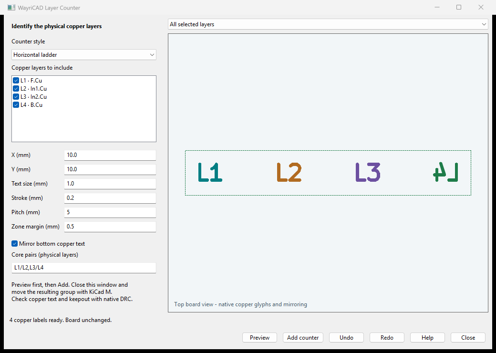

Native KiCad 10/wx capture. No private paths or data; no redaction needed.
1. Open the PCB and launch Layer Counter from the PCB Editor toolbar or external plugins menu.
2. Choose a style and check the enabled copper layers to identify. L1, L2, etc. are physical copper-layer numbers in this board's stackup.
3. Enter X and Y in millimetres, text size, stroke, pitch and zone margin. Choose a location with space for the counter. Bottom text is mirrored by default.
4. For core-mirrored or core-overlap styles, enter explicit pairs such as L1/L2,L3/L4. Every selected layer must belong to exactly one pair. These pairs do not infer actual core or prepreg material boundaries; verify the fabrication stackup yourself.
5. Click Preview. The diagram overlays all selected layers using different colours; native copper glyphs preserve their exact board-view rotation and mirroring, including bottom text and mirrored core pairs. Dashed bounds represent the zone-only keepout across the whole counter envelope on every selected layer. Settings changes clear the preview.
6. Click Add counter. Until this step, the board is unchanged. The resulting native group contains copper text, any style graphics, and one multilayer zone-only keepout spanning the whole counter envelope across the selected copper layers.
7. Close this window. Select the group and press M in KiCad to move it. Use this window's Undo and Redo only while its transaction state remains current; external board edits can require reopening or a new preview.
8. Run native DRC and review copper manufacturing output. Check track, pad and zone clearances, minimum stroke/feature sizes, board-edge spacing and layer text mirroring. Refill zones as needed. The tool is not a certified fabrication-standard checker.
Copper counters are intentional conductive features. Choose their location carefully; a zone-only keepout does not automatically prevent tracks or pads from crossing them. This plugin does not alter the stackup, assign nets, or determine real core/prepreg construction.
python -m layer_counter_plugin.cli board.kicad_pcb --output candidate.kicad_pcb --style row --layers L1,L2
The CLI writes a separate candidate board. Review the candidate in KiCad before adopting it. See --help for the available options.
Native UI example: help-preview.png shows a synthetic four-layer board in KiCad 10. No private data or paths are shown, and no redaction was needed.
- Horizontal / vertical ladders: one number per physical layer, in a row or column.
- Staircase / zigzag: offset the numbers to form a staircase or staggered ladder.
- Circle / square / rectangle / diamond / octagon: frame each layer number with copper on that same layer.
- Bars with labels: a copper bar accompanies each number.
- Core pairs - mirrored: paired faces occupy reflected adjacent slots; the second face has mirrored text.
- Core pairs - overlapping: paired faces use exactly the same X/Y slot on different layers; bottom text follows Mirror bottom copper text.
Pairing is explicit and covers selected adjacent physical layers once each. For a core between L2 and L3, select those two layers and enter L2/L3. Unselected layers retain their physical numbers in subsequent counters.
Pitch is a minimum; frames may increase the spacing to fit. Native text and outline extents determine the keepout plus your zone margin. The preview layer selector isolates a single layer or overlays all selected layers.
After moving the group, refill zones. Rotating a group is supported; flipping it swaps copper layers without renumbering the text, so regenerate instead. Regenerate after a stackup change. These are positive copper markers; soldermask openings and certified registration coupons are not generated.
CLI preview without --output is read-only JSON. Use KiCad 10's bundled Python for actual board operations. Existing output boards and companion files are never overwritten. The source project and custom-rule companions are copied under the candidate's name. The public PCM feed does not include this candidate until publication.